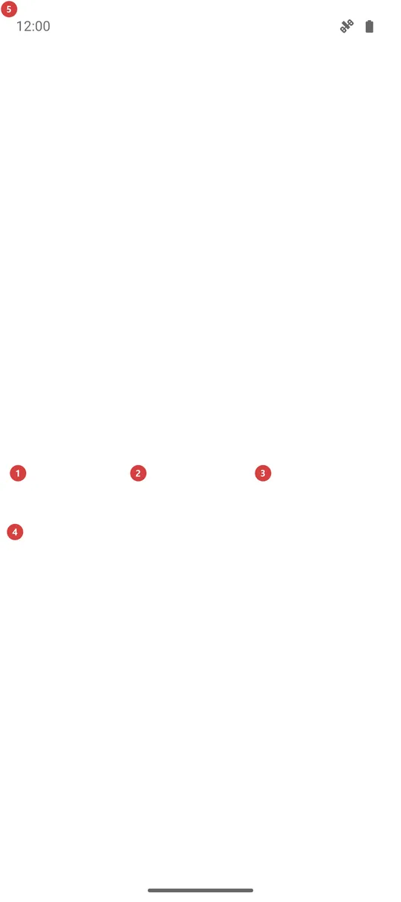

Аварийный сигнал SOS
Для чего этот экран
Сигнал SOS повторяет сигнал SOS по Морзе - три коротких, три длинных, три коротких - громкой сиреной, мигающим светом или тем и другим, чтобы вас услышали или увидели. Он только издаёт звук и свет: никому не звонит и не отправляет ваше местоположение.

Порядок действий
- Откройте «Аварийный сигнал SOS» из меню программ, с панели программ или кнопкой «Сигнал SOS» на экране «Турист». После установки он выключен, поэтому сначала включите его в «Настройках», на вкладке «Управление», в группе «Дополнительные программы и сценарии».
- Сигнал начинается в тот момент, когда открывается экран, в режиме, которым вы пользовались в последний раз. В первый раз это «Звук и свет», так что сразу ждите громкую сирену и мигающий свет.
- Чтобы изменить работу сигнала на ходу, нажмите «Звук и свет» 1, «Только звук» 2 или «Только свет» 3. Новый режим включается сразу и запоминается до следующего раза.
- Сирена, задняя вспышка и мигающий экран 5 идут в одном ритме: три коротких, три длинных, три коротких, затем пауза и снова.
- Экран можно закрыть или дать ему погаснуть: сигнал продолжится, а уведомление 6 покажет, что он активен, и предложит «Остановить сигнал».
- Нажмите «Остановить сигнал» 4, чтобы прекратить его. Выход с экрана кнопкой или жестом «Назад» тоже останавливает сигнал. Если ничего не делать, он выключится сам через 30 минут, чтобы сберечь батарею и вспышку.
- Если есть парные часы, запуск или остановка сигнала на телефоне делает то же самое на часах. Если часы вне зоны связи, каждое устройство сигналит само.
Элементы
Что он делает
1Звук и светСирена и стробоскоп вместе: вас и слышно, и видно.
Громкая сирена звучит вместе с задней вспышкой и мигающим экраном - всё в ритме SOS по Морзе. В первый раз выбран именно этот режим. Сирена идёт по каналу будильника, поэтому слышна, даже когда звонок отключён. Пока сигнал работает, громкость будильника поднята настолько, насколько позволяет телефон, а когда сигнал заканчивается - возвращается прежней.
2Только звукТолько сирена - для дневного времени или когда свет может ослепить.
Фонарик и экран остаются тёмными, и это бережёт батарею. Сирена та же громкая, на канале будильника, и звук то нарастает, то спадает, чтобы ухо к нему не привыкало.
3Только светТолько стробоскоп - для тихой ночи или когда звук привлечёт лишнее внимание.
Задняя вспышка и белый мигающий экран идут в ритме Морзе без звука. Телефон без вспышки всё равно подаёт сигнал: светом тогда служит один экран. Пока свет включён, окно доводится до полной яркости, но не настройка яркости телефона.
Остановка и стробоскоп
4Остановить сигналПрекращает сигнал здесь и на парных часах и закрывает экран.
Эта кнопка самая крупная на экране намеренно: в неё легко попасть замёрзшими или мокрыми руками, пока громко воет сирена. Одно нажатие останавливает сирену, вспышку и стробоскоп, просит парные часы тоже остановиться и закрывает экран. Подтверждать ничего не нужно. Чтобы подать сигнал снова, откройте экран ещё раз.
5Мигающий экранБелая вспышка на весь экран в ритме сигнала.
В режимах со светом весь экран вспыхивает белым в том же ритме Морзе, что и задняя вспышка. Благодаря этому телефон служит светом, даже когда вспышки нет, а где она есть, добавляется второй источник света. Вспышка - только картинка: касание проходит сквозь неё к кнопкам под ней, так что «Остановить сигнал» работает и при белом экране.
Вне экрана
6Уведомление о сигналеДержит сигнал под рукой, когда экран закрыт или телефон заблокирован.
Пока сигнал работает, в шторке висит уведомление «Аварийный сигнал SOS» с текстом «Сигнал активен» и названием режима, и остаётся постоянным уведомлением. Действие «Остановить сигнал» в нём прекращает сигнал сразу, а касание самого уведомления снова открывает этот экран. Сигнал продолжается, когда экран гаснет или вы переходите в другое приложение.